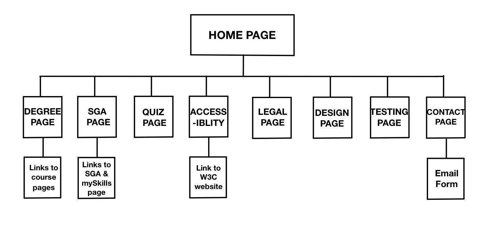
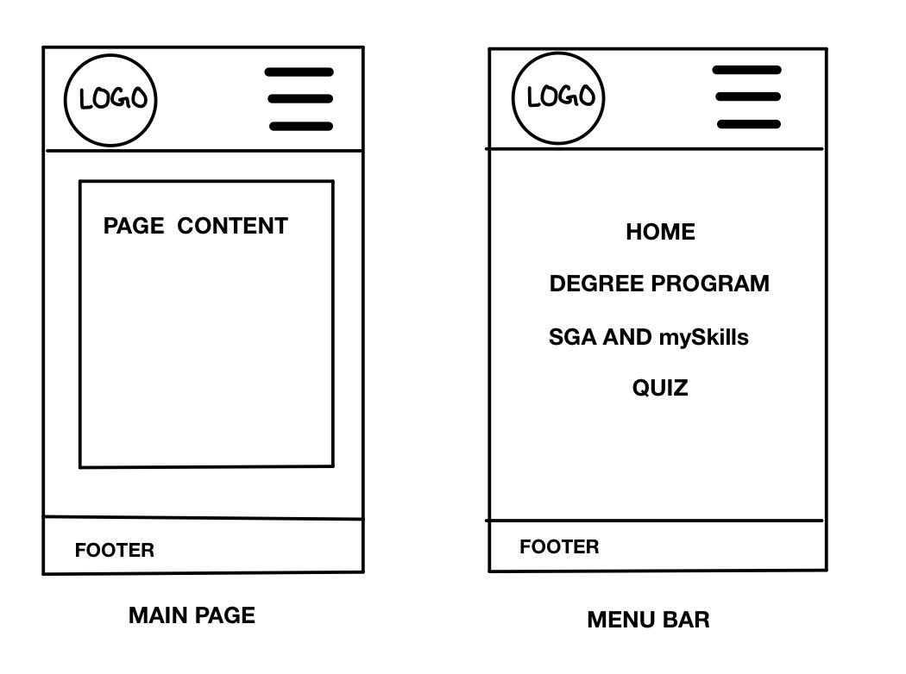
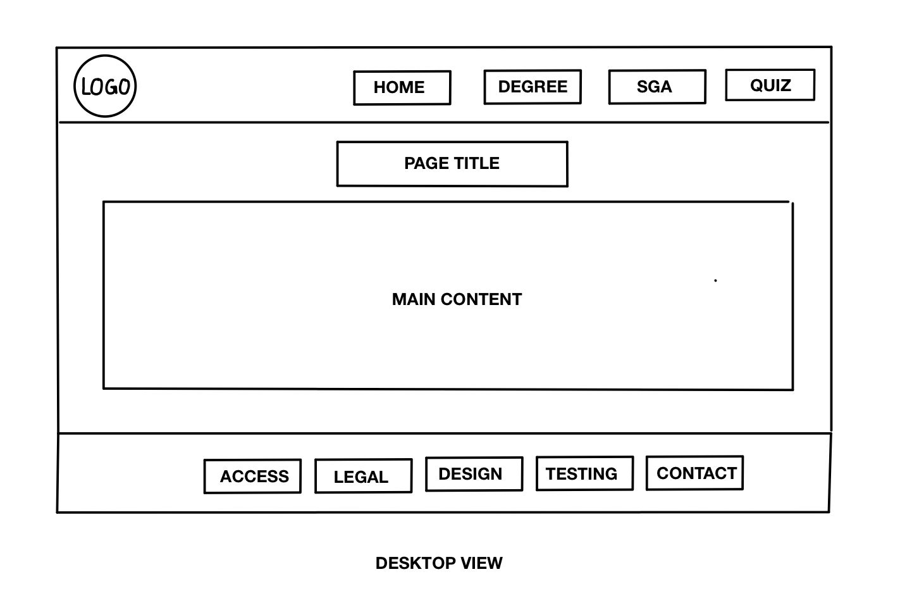

DESIGN
INTRODUCTION
This project, A Personal Portfolio website, has been created as a Mobile-First Responsive Web Design (i.e. it focuses on mobile users first and then on those accessing the website from a laptop/desktop) and has a simple yet cheerful look. The contrasting color combination, positioning of elements, easy navigation, etc all add up to the entire look of the website.
SITE MAP
The sitemap of the website looks like the following:

This sitemap is an example of how all the web pages are interlinked and explains the functioning of the website. It also includes all the mentioned links, email IDs, and any other relevant sources of information.
I believe this is a logical structure for the website since there is a valid relationship between all the linked pages and they are grouped by certain categories. Other than that, it also follows the three-click rule (i.e. a user should be able to reach any webpage/link with no more than three mouse clicks.)
DESIGN MOCK-UPS
1) BASIC LAYOUT
The basic layout in mobile webpages consists of a header, body, and footer. The header includes the logo and the menu bar. Upon selecting the menu icon, a list appears that contains links to Home, degree program, SGA, and the quiz webpages. The body content differs slightly in each webpage, but generally includes a white background box that contains all the body elements. The footer is located at the bottom of the page and contains links to the accessibility, design, testing, contact, and, legal and security web pages.
Below is the general design of the web pages in mobile view.

On the other hand, in the desktop view, the header contains a navigation bar with the links to Home, degree program, SGA, and the quiz webpages along with the logo. The body and footer are similar to those in the mobile view.
Below is the general design of the web page in desktop view.

I have chosen this layout since it is easy to navigate through and is accessible. The navigation bar makes accessing web pages easier and more convenient.
2) APPEARANCE
The basic approach behind the chosen color combinations and the positioning of elements is the ease to locate elements and having a pleasing appeal. Increasing the font size also helped to make the content more visible and easy to read.
The color contrasts between the shades of teal and white help increase focus on the information included on each of the pages. Other than that, the grey shadow effect on all of the box elements is specifically for those with disabilities, but also in general to catch people's attention. The highlights on elements in the navigation bar that appear when hovering over them help users understand what they currently are working with. I have used breakpoints for the navigation bar since this helps make it more responsive.
3) MENU SYSTEMS
I have chosen the off-canvas navigation system, since this helps save space and is more professional, especially in mobile view. The menu bar includes links to all the web pages so it is easily accessible as well.
Source: https://responsivenavigation.net/examples/off-canvas-slide/